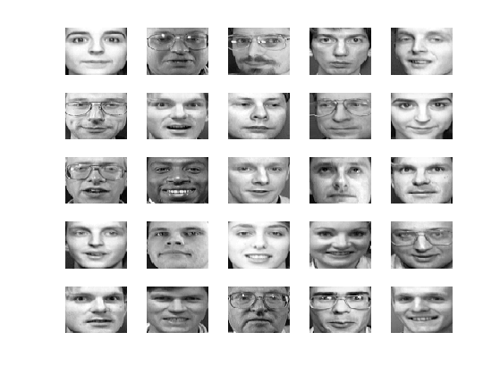
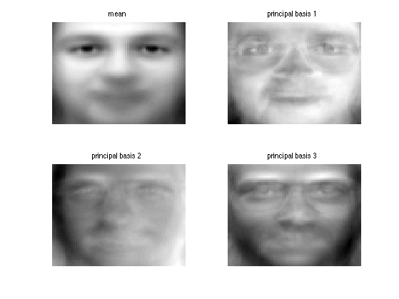
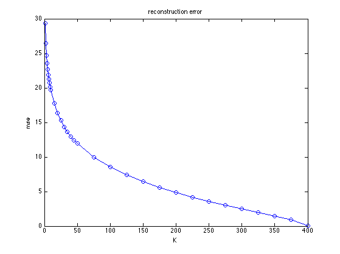
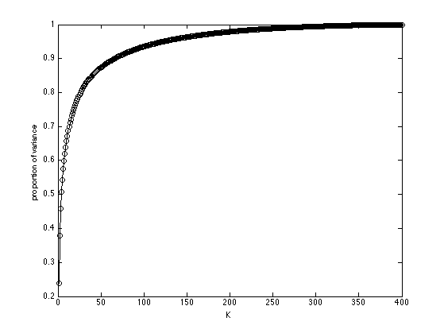
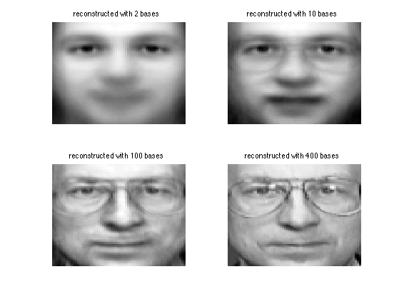

PCA Image Demo
Based on code by Mark Girolami, but uses eig instead of svd to save memory
% This file is from pmtk3.googlecode.com setSeed(0); if 0 loadData('mnistAll'); % mnist structure %train_images: [28x28x60000 uint8] 0 to 255 % test_images: [28x28x10000 uint8] % train_labels: [60000x1 uint8] % test_labels: [10000x1 uint8] h = 28; w = 28; d= h*w; ndx = find(mnist.train_labels==3); ndx = ndx(1:1000); n = length(ndx); X = double(reshape(mnist.train_images(:,:,ndx),[d n]))'; name = 'mnist3' end if 1 loadData('olivettiFaces'); % 0 to 255, from http://www.cs.toronto.edu/~roweis/data.html X=faces'; clear faces; % 4096x400 (64x64=4096) % 10 images per person, 40 images y = repmat((1:40),10,1); y = y(:); [n d] = size(X); %X = rescaleData(X, 0, 1); % introduces many artefacts! h = 64; w = 64; name = 'faces' end %%%%%%% if 0 X = loadData('digits3Htf'); % 658 x 256 - row order, not column! %http://www-stat.stanford.edu/~tibs/ElemStatLearn/data.html h = 16; w = 16; [n d] = size(X) X = reshape(X, [n h w]); X = permute(X, [3 2 1]); % 16 x 16 x 658 X = reshape(X, [h*w n])'; end if 0 X = loadData('uspsAll'); % data: [256x1100x10 uint8] % http://www.cs.toronto.edu/~roweis/data.html X = double(data(:,:,3))'; h = 16; w = 16; end if 0 % use all 10 classes at once - gives hard to interpret bases loadData('mnistAll'); % mnist structure %train_images: [28x28x60000 uint8] 0 to 255 % test_images: [28x28x10000 uint8] % train_labels: [60000x1 uint8] % test_labels: [10000x1 uint8] h = 28; w = 28; d= h*w; ndx = randperm(10000); % random classes ndx = ndx(1:1000); n = length(ndx); X = double(reshape(mnist.train_images(:,:,ndx),[d n]))'; end % Visualize a random subset of the data as a single image perm = randperm(n); figure(1); clf %K = 24; %XX = reshape(X(perm(1:K),:)', [h w 1 K]); montage(XX) %title(sprintf('%d random training images', K)) for i=1:25 subplot(5,5,i) f = reshape(X(perm(i),:), [h w]); imagesc(f); axis off; colormap gray end printPmtkFigure(sprintf('pcaImages-%s-images',name)); mu = mean(X); XC = X-repmat(mu,size(X,1),1); sprintf('Performing PCA.... stay tuned\n'); %[U,S,V] = svd(XC,0); %evals = (1/n)*diag(S).^2; [V, Z, evals] = pcaPmtk(X); % visualize basis functions (eigenfaces) figure(2);clf subplot(2,2,1) imagesc(reshape(mu,[h w])); colormap(gray); axis off; title('mean') for i=1:3 subplot(2,2,i+1) imagesc(reshape(V(:,i),[h w])); colormap(gray); axis off; title(sprintf('principal basis %d', i)) end printPmtkFigure(sprintf('pcaImages-%s-basis',name)); % Plot reconstruction error figure(3); clf n = size(X,1); Ks = [1:10 10:5:50 50:25:rank(X)]; clear mse for ki=1:length(Ks) k = Ks(ki); %Xrecon = U(:,1:k) * S(1:k,1:k) * V(:,1:k)' + repmat(mu, n, 1); Xrecon = Z(:,1:k)*V(:,1:k)' + repmat(mu, n, 1); err = (Xrecon - X); mse(ki) = sqrt(mean(err(:).^2)); end plot(Ks, mse, '-o') ylabel('mse'); xlabel('K'); title('reconstruction error'); printPmtkFigure(sprintf('pcaImages-%s-recon', name)); % Scree plot figure(4);clf plot(cumsum(evals)/sum(evals), 'ko-') ylabel('proportion of variance') xlabel('K') printPmtkFigure(sprintf('pcaImages-%s-scree', name)); % Plot reconstructed image ndx = 125; % selected face Ks = [2 10 100 rank(X)]; figure(5);clf for ki=1:length(Ks) k = Ks(ki); %Xrecon = U(ndx,1:K) * S(1:K,1:K) * V(:,1:K)' + mu; Xrecon = Z(ndx,1:k)*V(:,1:k)' + mu; subplot(2,2,ki); imagesc(reshape(Xrecon', h, w)); axis off; colormap(gray) title(sprintf('reconstructed with %d bases', k)) end printPmtkFigure(sprintf('pcaImages-%s-reconImages', name));
name = faces    